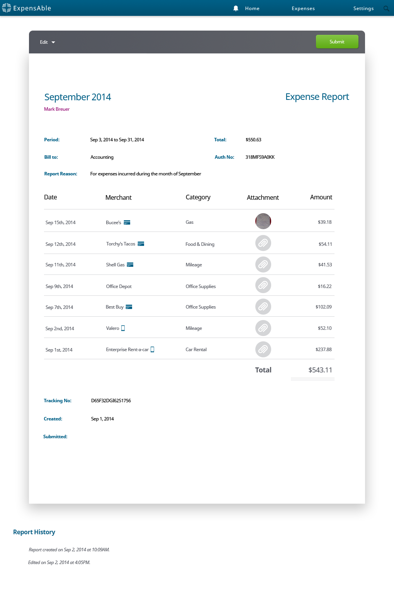
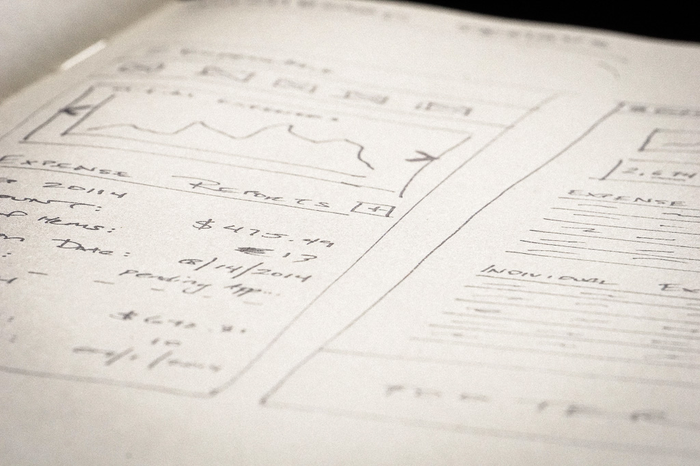
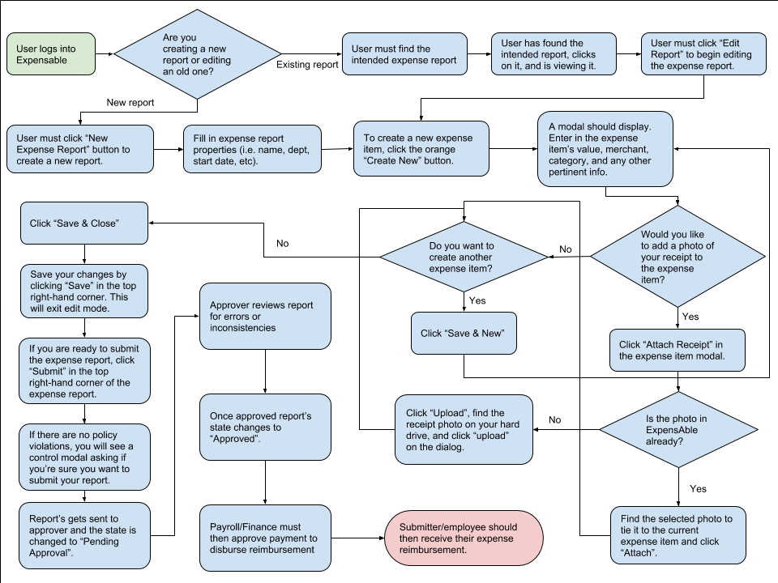
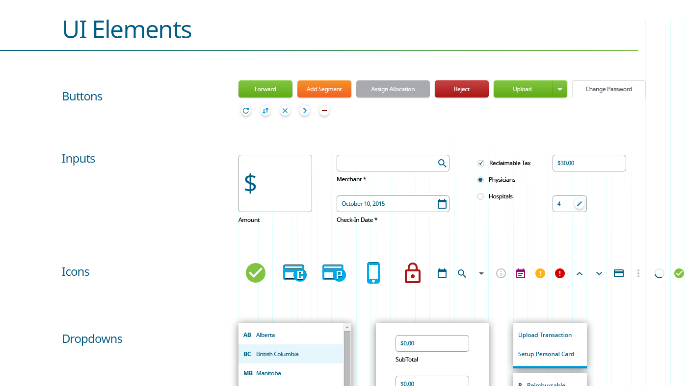

ExpensAble
UI Design, Product & Project Management , and Testing
Overview
ExpensAble, a product developed in the late 1990s, was one of Insperity's flagship software offerings. It is an expense management application that Insperity provides to its clients'. The software allows those clients' employees' track their reimburseable expenses. The big difference with ExpensAble, however, is that it's geared for corporations—not small businsses. It comes with robust budgetary controls. It can slice-and-dice costing information so accountants can get deeper info than just "who spent how much on what".
Problem
The software, over its 20 year life, had began to lag behind consumer expectations of app intuitiveness. Workflows were not efficient, and many users got frustrated trying to complete simple tasks.
Insperity executives approached myUXteam to see if we could come up with a couple of concepts for a newer, sleeker user experience for the product. Their aim was to stop the loss of users, regain market share, and deliver a modern app experience that their clients were used to in the age of iPhones.
With this goal in mind, we presented VPs within Insperity a fresh look for ExpensAble. Our first concept presented a simple dashboard so users could digest bulk information about their expense reports, like how much money were they about to get reimbursed.
Fortunately, Insperity liked our designs, and they believed our concept conveyed a clear understanding of all end-user' motivations. In short, we came to the table with designs that understood key motivations from a more complex and varied stakeholder group.
Our Process
Fortunately, Insperity liked our designs, and they believed our concept conveyed a clear understanding of all end-user' motivations. In short, we came to the table with designs that understood key motivations from a more complex and varied stakeholder group.
- The On-the-Go Salesman
- The Executives Assistant
- The Traveling Consultant
- The Mid-level Manager
- The Department Head
- The CFO or Head of Finance

Over time ExpensAble had become quite a expansive set of functionality, so we created a sitemap and features & functionality list. From this list, we began to make recommendations of a product roadmap and plan-of-attack.
We aimed to challenge basic assumptions and the value the application's user experience brought. To back our recommendations, we performed guerrilla usability testing to pin-point weaknesses. We coached decision-makers on a product direction that focused on ease-of-use. Our key take-away: no one wants to spend minutes (let alone hours) submitting an expense report.
As with every myUXteam process, we began with story boards or user journey outlines for a given workflow. At the beginning of a sprint, we would approach stakeholders with conceptual ideas, e.g. flowcharts or low-fidelity designs, so that we could get acceptance and approval on direction. Once approval was reached, we then began designing high-fidelity wireframes of the workflow.
Through the high-fidelity design, we were implicitly creating a pattern library from which Insperity's developers could rely upon. Using an atomic design framework, developers from then on had a consistent set of UI elements to code from. Over time, we began stacking all of these elements into a de-facto style guide. For the first time, Insperity's developers could look to one source for visual direction.
Conclusion & Outcomes
In the end, myUXteam overhauled 80% of ExpensAble's user experience. It's an application that serves thousands of unique pages and users. It controls hundreds of thousands of corporate dollars to many corporations around the world. And, we were ecstatic to have been a part of such a challenging and engrossing project.
ExpensAble's redesign was released in mid-2017.
Previous Project: Boost Next Project: Peppermill